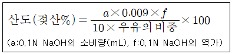

식품산업기사(구) (2009-03-01 기출문제)
1과목: 식품위생학
1. 고등어와 같은 적색 어류에 특히 많이 함유된 물질은?
- glycogen
- purine
- mercaptan
- histidine
(정답률: 75%)

2. 다음 물질 중 소독 효과가 거의 없는 것은?
- 알코올
- 석탄산
- 크레졸
- 중성세제
(정답률: 86%)
3. 미각에 청량감과 상쾌한 자극을 주기 위해 사용하는 산미료가 아닌 것은?
- 초산
- 구연산
- L-글루타민산
- 젖산
(정답률: 48%)
4. 1968년 일본에서 발생한 미강유오염사고의 원인물질로 피부발진, 관절통 등의 증상을 수반하는 것은?
- PCB
- 페놀
- 다이옥신
- 메탄올
(정답률: 89%)
5. 식품등의 취급방법으로 틀린 것은?
- 부패ㆍ변질되기 쉬운 원료는 냉동ㆍ냉장시설에 보관 하여야 한다.
- 제조ㆍ가공ㆍ조리 또는 포장에 직접 종사하는 자는 위생모를 착용하여야 한다.
- 최소판매 단위로 포장된 식품이라도 소비자가 원하면 포장을 뜯어 분할하여 판매할 수 있다.
- 제조ㆍ가공ㆍ조리에 직접 사용되는 기계ㆍ기구는 사용 후에 세척ㆍ살균하여야 한다.
(정답률: 89%)
6. 노로바이러스의 특징이 아닌 것은?
- 물리ㆍ화학적으로 안정된 구조를 가진다.
- 환자의 구토물이나 대변에 존재한다.
- 100℃에서 10분간 가열해도 불활성화되지 않는다.
- 구토나 설사 증상 없이도 바이러스를 배출하는 무증상 감염도 발생한다.
(정답률: 69%)
7. 곰팡이 독소(mycotoxin) 중 신장독을 일으키는 독소는?
- aflatoxin
- citreoviridin
- citrinin
- islanditoxin
(정답률: 34%)
8. 최확수(MPN)번의 검사와 가장 관계 깊은 것은?
- 대장균군 검사
- 부패 검사
- 식중독균 정량 검사
- 타액 검사
(정답률: 94%)
9. 식품과 주요 신선도 검사방법의 연결이 틀린 것은?
- 식육 - 휘발성염기질소 측정
- 통조림식품 - 평판배양법
- 우유 - 산도 측정
- 달걀 - 난황계수 측정
(정답률: 88%)
10. 수인성 전염병의 특징이 아닌 것은?
- 단시간에 다수의 환자가 발생한다.
- 동일 수원의 급수지역에 환자가 편재된다.
- 잠복기가 비교적 짧다.
- 원인 제거시 발병이 종식될 수 있다.
(정답률: 95%)
11. 식물의 독성분이 알칼로이드(alkaloid)인 것은?
- 맥각
- 청매
- 수수
- 강낭콩
(정답률: 72%)
12. 우유와 관련된 시험 중에서 저온살균이 완전히 이루어졌는가의 가부를 검사하는 방법은?
- 메틸렌블루(Methylene blue) 환원 시험
- 포스파테이즈(Pgosphatase) 검사법
- 브리드씨법(Breed`s method)
- 알코올 침전 시험
(정답률: 74%)
13. 농약에 의한 식품오염에 대한 설명으로 틀린 것은?
- DDT 같은 유기염소제는 간종양의 원인이 된다.
- 유기수은제는 흙이나 물속에서 미생물, 광선, 산소 등에 의하여 분해되므로 염려할 필요가 없다.
- 훈증제로 사용되는 클로로피크린의 분해 생성물은 간접적으로 발암성을 나타낸다.
- 발암성이 문제되는 농약은 그 잔류에 대하여 연구 할 필요가 있다.
(정답률: 94%)
14. 유독물질의 독성 결정과 관계가 없는 것은?
- 반수 치사량(LD50)
- 1일 섭취허용량(ADI)
- 최대 무작용량
- 치소 무작용량
(정답률: 69%)
15. 보존료의 사용에 따른 효과는?
- 항균작용
- 소독작용
- 영양강화
- 기호성 증진
(정답률: 89%)
16. 안식향산에 대한 설명으로 틀린 것은?
- 분자식은 C8H6O2 이다.
- 벤조산이라고 불리는 식품 보존료이다.
- pH4.5 이하에서 항균효과가 강하다
- 간장의 사용 기준은 0.6g/Kg 이하이다.
(정답률: 69%)
17. 햄, 소시지 등 훈제품에서 주로 발견될 수 있는 발암성 물질은?
- trans 불포화지방산
- benzopyrene
- Tryo-P-1
- trichloroethylene
(정답률: 86%)
18. 중금속의 이행이 가능한 용기와 가장 거리가 먼 것은?
- 도자기
- 통조림 공관
- 염화비닐수지
- 유리용기
(정답률: 63%)
19. 식품의 부패시 생성되는 주요 물질이 아닌 것은?
- 아민
- 글리코겐
- 스카톨
- 암모니아
(정답률: 74%)
20. 식물에 존재하는 유독성 배당체가 아는 것은?
- ricin
- amygalin
- linamarin
- cycasin
(정답률: 32%)
2과목: 식품화학
21. 다음 중 감미가 가장 강한 당은?
- 설탕
- 맥아당
- 과당
- 유당
(정답률: 84%)
22. 유중수적형(W/O:water in oil) 교질상 식품은?
- 우유
- 마요네즈
- 아이스크림
- 버터
(정답률: 75%)
23. 반고형의 식품을 삼킬 수 있는 상태로까지 붕괴시키는데 필요한 힘으로 설명되어지는 식품의 texture 성질은?
- 부착성(aadhesiveness)
- 깨짐성(취약성, brittleness)
- 저작성(chewyness)
- 검성(gumminess)
(정답률: 42%)
24. 요오드의 결핍증은?
- 갑상선종
- 빈혈
- 구루병
- 골연화증
(정답률: 62%)
25. 제인(zein)은 어디에서 추출하는가?
- 밀
- 보리
- 옥수수
- 감자
(정답률: 59%)
26. 식품의 레올로지의 개념에 속하지 않는 것은?
- 점성(viscosity)
- 탄성(elasticity)
- 소성(plasticity)
- 팽윤성(swelling)
(정답률: 77%)
27. 물, 청량음료, 식용유 등 묽은 용액들은 어떤 유체의 특성을 나타내는가?
- 뉴톤 유체
- 딜레탄트 유체
- 의사가소성 유체
- 빙함소성 유체
(정답률: 78%)
28. 식품 중에 존재하는 유리수의 특성으로 옳은 것은?
- 식품 중의 구성성분에 강하게 흡착되어 있는 물이다.
- 식품 중의 유기물질과 수소결합에 의해 결합하고 있는 형태의 물이다.
- 염류, 당류, 수용성 단백질 등을 용해하는 용매로 작용 하는 물이다.
- 미생물의 번식에 이용되지 못하는 물이다.
(정답률: 45%)
29. 25℃의 일정한 온도에서 순수하 물의 수증기압이 22mmHg이고, 그 온도에서 식품이 나타내는 수증기압이 20mmHg이면 이 식품의 수분활성도는 약 얼마인가?
- 0.91
- 1.10
- 0.88
- 0.80
(정답률: 40%)
30. 트랜스지방이 콜레스테롤에 미치는 영향은?
- LDL과 HDL을 모두 감소시킨다.
- VLDL을 HDL로 전환시킨다.
- LDL과 HDL을 모두 증가시킨다.
- LDL은 증가시키고 HDL은 감소시킨다.
(정답률: 67%)
31. 생선 비린내의 주된 성분은?
- dimethyl sulfide
- ethanol
- aldehyde
- trimethylamine
(정답률: 74%)
32. 특성차이를 검사하는 관능검사방법 중 동시에 두 개의 시료를 제공하여 특정 특성이 더 강한 것을 식별하도록 하는 것은?
- 이점비교검사
- 다시료비교검사
- 순위법
- 평점법
(정답률: 75%)
33. 안토시아닌(anthocyanin)계 색소가 산성에서 띠는 색깔은?
- 무색
- 적색
- 청색
- 자색
(정답률: 80%)
34. 전분의 α-1,6 결합에만 작용하는 가수분해효소는?
- α-amylase
- β-amylase
- glucoamylase
- isoamylase
(정답률: 17%)
35. 효소적 갈변 반응을 억제하는 방법이 아닌 것은?
- 데치기(blanching) 처리를 한다.
- 밀폐된 용기에 식품을 넣어 공기를 제거한다.
- 아황산가스를 처리한다.
- polyphnoloxidase를 활성화시킨다.
(정답률: 48%)
36. 비타민 K의 주된 생리작용은?
- 골격 형성
- 탄수화물 대사
- 혈액 응고
- 단백질 합성
(정답률: 74%)
37. 변향(reversion)이 일어나기 어려운 유지는?
- 옥수수유
- 대두유
- 아마인유
- 들기름
(정답률: 32%)
38. lacose가 들어있는 식품은?
- 쇠고기
- 채소
- 우유
- 달걀
(정답률: 69%)
39. 아미노 카르보닐(amino-carbonyl) 반응에서 todd성되는 물질은?
- cinamon
- caramel
- dextrin
- melanoidin
(정답률: 56%)
40. 해초에서 추출되는 검(gum)질이 아닌 것은?
- 한천
- 알긴산
- 리그닌
- 카라기난
(정답률: 59%)
3과목: 식품가공학
41. 젖산에 대한 설명으로 틀린 것은?
- pH를 올려 잡균 오염을 방지하는 산미료로 사용된다.
- 우유를 젖산 발효할 때 젖당에서 생성된다.
- 자연계에 널리 분포하며 많은 식물에 유리 상태로 존재한다.
- 피로한 근육 중에 축척된다.
(정답률: 39%)
42. 마요네즈 제조에 있어 난황의 주된 작용은?
- 응고제 작용
- 유화제 작용
- 기포제 작용
- 팽창제 작용
(정답률: 54%)
43. 당도가 12%인 사과과즙 10kg을 당도가 24%가 되도록 하기 위하여 첨가해야 할 설탕량은 약 몇kg인가?
- 1.2750kg
- 1.5789kg
- 2.3026kg
- 2.5431kg
(정답률: 54%)
44. 우수건강기능식품제조기준 및 품질관리기준을 준수하는 건강기능식품제조업소를 GMP적용업소로 지정하는 자는?
- 식품의약품안전청장
- 농림수산식품부장관
- 농촌진흥청장
- 한국식품연구원장
(정답률: 74%)
45. 장류 중 미생물의 발효작용에 의해 제조되지 않는 것은?
- 재래한식간장
- 개량한식간장
- 청국장
- 산분해간장
(정답률: 64%)
46. 유지의 채취방법이 아닌 것은?
- 증류법
- 용출법
- 압착법
- 추출법
(정답률: 71%)
47. 간장 코오지 제조지 밀을 볶아 첨가하는 이유가 아닌 것은?
- 간장의 향기 및 빛깔을 좋게 한다.
- 밀의 녹말을 호화시켜 코오지균의 번식을 좋게 한다.
- 찐콩의 수분을 흡수한다.
- 잡균의 번식을 억제하고 코오지의 저장성을 높인다.
(정답률: 20%)
48. 건조 가공품과 건조기의 연결이 틀린 것은?
- 건조 쇠고기 - 동결 건조기
- 분말 커피 -분무 건조기
- 건조 계란 - 드럼 건조기
- 건조 쥐치포 - 터널 건조기
(정답률: 62%)
49. 젤리화에 가장 적합한 유기산의 함량은?
- 0.01%
- 0.03%
- 0.3%
- 3%
(정답률: 64%)
50. 공관(空罐)의 내압을 시험하는 계기는?
- 마이크로 메터
- 배큐-엄 테스터
- 카운터 싱크 게이지
- 에어 캔 테스터
(정답률: 62%)
51. 과일에 방향성을 주는 성분은?
- 비타민 C
- 펙틴질
- 에스테르
- 유기산
(정답률: 54%)
52. 옥수수 전분 제조시 배아의 분리를 쉽게하기 위하여 사용 되는 것은?
- 황산
- 수산
- 질산
- 아황산
(정답률: 69%)
53. 밀가루는 제분 저장기간 중 산소의 산화작용으로 밀가루 단백질분해효소의 활성저하나 carotenoid 색소의 분해가 진행하는 등 숙성과 표백이 이루어진다. 이러한 현상을 인위적으로 단기간에 발생시키는 것을 목적으로 쓰이는 식품첨가물이 아닌 것은?
- 과산화수소
- 과산화벤조일
- 이산화염소
- 과황산암모늄
(정답률: 40%)
54. 즉석면의 제조시 기름에 튀기는 공정 중 일어나는 변화가 아닌 것은?
- 탈수
- 전분의 α화
- 탈색
- 독특한 풍미부여
(정답률: 32%)
55. 원유에 함유되어 있는 유리지방산(free fatty acids)을 최종제품의 품질을 고려하여 탈산(deacidification)하는 방법이 아닌 것은?
- 알칼리 정제 방법
- 이온교환수지에 의한 방법
- 가성소다와 석회를 이용하는 방법
- 원심분리에 의한 방법
(정답률: 42%)
56. 청국장에 대한 설명으로 틀린 것은?
- 타르색소가 검출되어서는 안된다.
- 된장보다 고형물 덩어리가 많다.
- 콩은 황백색 종자가 좋다.
- natto균은 Aspergillus속이다.
(정답률: 74%)
57. 기체조절포장(MAP: modified atmosphere packaging)과 관계가 먼 기체는?
- H2
- N2
- O2
- CO2
(정답률: 42%)
58. 요구르트 제조에 대한 설명으로 틀린 것은?
- 탈지분유 120g, 설탕 240g, 물 1.6L를 잘 혼합하여 발효할 원액으로 준비한다.
- 접종할 스타터(starter)는 주로 Lactobacillus bulgaricus, Lactobacillus acidophilus, Streptococcus lactis 등이다.
- 발효온도는 20~25℃ 정도가 가장 적합하다.
- 발효시 생성된 유기산은 주로 젖산이다.
(정답률: 38%)
59. 난황계수가 0.40이고, 난황의 폭이 3cm일 때, 난황의 높이와 계란의 상태는?
- 높이 0.12cm이고, 부패란이다.
- 높이 0.12cm이고, 신선란이다.
- 높이 1.2cm이고, 부패란이다.
- 높이 1.2cm이고, 신선란이다.
(정답률: 74%)
60. 검체 10mL로 우유의 산도를 계산하는 다음 식에서 0.009의 의미는?

- 0.1N NaOH 용액의 농도계수
- 0.1N NaOH 용액 1mL에 해당하는 젓산의 g수
- 우유 1mL중에 들어있는 젖산의 mg수
- 우유 1mL중에 들어있는 전 알칼리양의 mg수
(정답률: 80%)
4과목: 식품미생물학
61. 다음 중 글루타민산(glutamic acid)을 생산하는 우수한 생산균주가 아닌 것은?
- Pseudomonas속
- Brevibacterium속
- Corynebacterium속
- Microbacterium속
(정답률: 53%)
62. 발아 보리를 발효시켜 생산하는 주류는?
- 포도주
- 맥주
- 일본청주
- 소주
(정답률: 84%)
63. 발효공업에서 주요한 효모인Saccharomyces cerevisiae가 발효시키지 못하는 것은?
- glucose
- maltose
- lactose
- sucrose
(정답률: 67%)
64. β-carotene을 분비하므로 붉은 빵 곰팡이로도 불리는 곰팡이는?
- Monascus속
- Ashbya속
- Neurospora속
- Fusarium속
(정답률: 63%)
65. 순정균류에 속하지 않는 것은?
- 접합균류
- 자낭균류
- 담자균류
- 불완전균류
(정답률: 47%)
66. 초산균(Acetobacter)을 사용하여 주정초를 만들 때 이용되는 주 원료는?
- 쌀
- 당밀
- 에틸알코올
- 빙초산
(정답률: 53%)
67. 클로렐라(chlorella)에 대한 설명을 틀린 것은?
- 단세포의 녹조류이다.
- 엽록소를 갖고 있다.
- 형태는 나선형이다.
- 양질의 단백질을 다량 함유한다.
(정답률: 77%)
68. 맥주에 불쾌한 냄새를 나타내는 효모는?
- Saccharomyces pastorianus
- Saccharomyces coreanus
- Schizosaccharomyces pombe
- Schizosaccharomyces mallacei
(정답률: 43%)
69. naringinase 효소의 설명으로 옳은 것은?
- 감귤 쓴맛 성분의 분해효소이다.
- 식물 세포벽의 다당류 분해효소이다.
- sucrose 분해효소이다.
- 젖당분해효소이다.
(정답률: 54%)
70. 삼면발효효모의 특성은?
- 발효 최적 온도는 10~25℃이다.
- 발효속도가 느리며 혐기성이다.
- 독일계의 맥주 효모가 여기에 속한다.
- 라피노오스(raffinose)를 발효시킬 수 있다.
(정답률: 47%)
71. 일반적으로 요구르트 제조시 대량의 젖산을 생산하며, 정장제로도 이용되는 대표적인 젖산균은?
- Streptococcus faecalis
- Lactococcus lactis
- Lactobacillus bulgaricus
- Lactobacillus plantarum
(정답률: 85%)
72. RNA 바이러스에서는 복제시 바이러스 RNA에 대한 상보적인DNA를 형성하는 데 이에 관여하는 효소는?
- DNA 중합효소(DNA polycerase)
- RNA 중합효소(RNA polymerase)
- 역전사 효소(reverse transcriptase)
- DNA 리가아제(Dna ligase)
(정답률: 34%)
73. 분열에 의하여 증식하는 효모는?
- Saccharomyces속
- Candida속
- Sporobolomyces속
- Schizosaccharomyces속
(정답률: 65%)
74. 원핵세포와 진핵세포에 대한 설명 중 옳은 것은?
- 진핵세포가 원핵세포보다 크기가 더 작다.
- 진핵세포에는 세균, 방선균이 속한다.
- 원핵세포의 세포벽은 peptidoglycan층으로 되어 있다.
- 원색세포는 핵막, 인, 미토콘드리아를 갖고 있다.
(정답률: 39%)
75. 세균의 형태(morphology)는 무엇에 의하여 결정되는가?
- 세포막
- 세포벽
- 편모
- 섬모
(정답률: 58%)
76. 정상발효(homofementative) 젖산균의 당류 발효에 대한 설명으로 옳은 것은?
- 젖산과 초산 생성 통성혐기성균이다.
- 젖산 및 알코올 생성 통성혐기성균이다.
- 젖산 이외에 수소생성 통성혐기성균이다.
- 젖산만 생성하는 통성혐기성균이다.
(정답률: 62%)
77. 그람염색시 그람음성세균은 어떤 시약에 의하여 빨갛게 염색되는가?
- 크리스털 바이오렛(crystal violet)
- 요오드 용액(iodine solution)
- 메틸렌 블루(methylene blue)
- 사프라닌(safranin)
(정답률: 48%)
78. 탄소원으로 포도당 1kg에 saccharomyces cerevisiae를 배양하여 발효시켰을 때 얻어지는 에틸알코올의 이론적인 생성양은 약 얼마인가?
- 423g
- 511g
- 645g
- 786g
(정답률: 42%)
79. 식품과 관련 제조균의 연결이 틀린 것은?
- 간장-Aspergillus oryzae
- 포도주-Saccharomyces cerevisiae
- 식빵-Saccharomyces cerevisiae
- 치즈-Aspergillus niger
(정답률: 53%)
80. 우유에 발생되면 쓴맛을 냄으로써 고미화 시키며, 단백질 분해력이 강한 균은?
- Erwinia carotova
- Gluconbacter oxydans
- Enterobacter aerogense
- Pseudomonas fluorescens
(정답률: 73%)